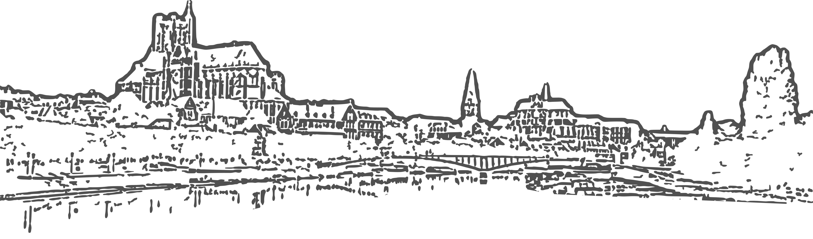

Bonjour et bienvenue sur mon site !
Je suis enseignant de physique en classe préparatoire PCSI au lycée Jacques Amyot d’Auxerre (Prépa Jacques-Amyot) depuis septembre 2022. J’accompagne chaque année des étudiants motivés dans la découverte et l’approfondissement des bases fondamentales de la physique, en cherchant toujours à transmettre à la fois la rigueur scientifique et le plaisir de comprendre le monde qui nous entoure.
En parallèle, j’enseigne également en DNL anglais physique-chimie auprès des élèves de Première et parfois un peu d'enseignement scientifique en terminale.
Sur ce site, je souhaite partager mes projets pédagogiques, des ressources pour mes élèves ainsi que des réflexions autour de l’enseignement des sciences. Vous y trouverez des documents, des activités, des idées…
Une partie non négligeable du contenu, surtout pour les exercices, provient de collègues. Certaines pages de ce site sont donc plus une vitrine de ce que je propose à mes élèves plus que de réelles inventions personnelles.
Bonne visite, et au plaisir d’échanger !